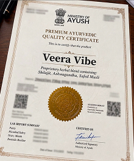
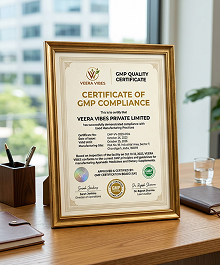
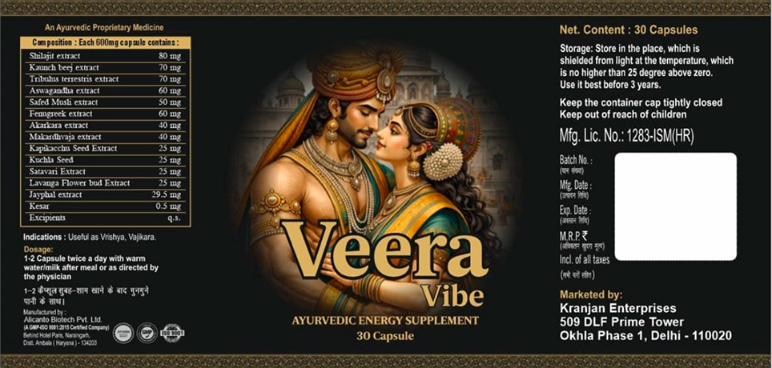

प्रमाण पत्र और प्रयोगशाला रिपोर्ट
उत्पाद ने गुणवत्ता नियंत्रण पास कर लिया है. अनुरोध पर दस्तावेज़ उपलब्ध हैं.

अनुरूप प्रमाण पत्र

प्रयोगशाला निष्कर्ष

जीएमपी गुणवत्ता प्रमाणपत्र
वीरा वाइब्स एक आहार अनुपूरक है, यह कोई दवा नहीं है और इसका उद्देश्य किसी भी बीमारी का निदान, इलाज या रोकथाम करना नहीं है।. उपयोग से पहले डॉक्टर से परामर्श करने की सलाह दी जाती है. उपयोग का परिणाम व्यक्तिगत है.
परंपरागत रूप से प्रोस्टेट फ़ंक्शन का समर्थन करने के लिए उपयोग किया जाता है
मूत्र प्रणाली का समर्थन
प्रजनन प्रणाली के सामान्य कामकाज को बनाए रखने में भाग लें
पादप स्टेरोल्स का स्रोत
पारंपरिक आयुर्वेदिक पौधा, सामान्य स्वर के लिए उपयोग किया जाता है
संपूर्ण संरचना, खुराक और उपयोग की विधि के लिए, पैकेजिंग और निर्माता की आधिकारिक वेबसाइट देखें।

उत्पाद ने गुणवत्ता नियंत्रण पास कर लिया है. अनुरोध पर दस्तावेज़ उपलब्ध हैं.

अनुरूप प्रमाण पत्र
प्रयोगशाला निष्कर्ष

जीएमपी गुणवत्ता प्रमाणपत्र